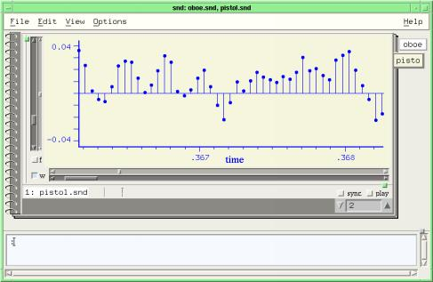
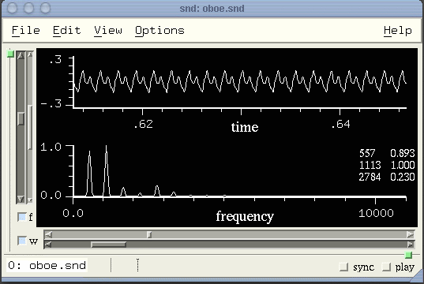
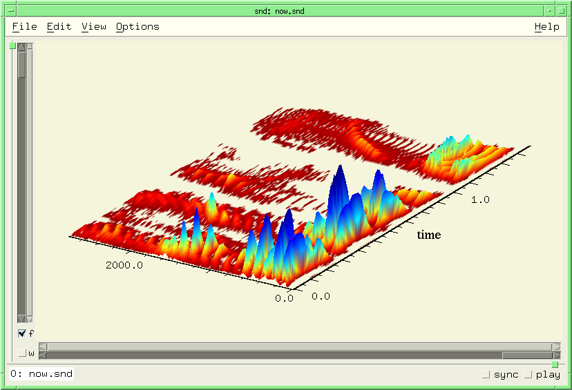

|
| related documentation: | snd.html | extsnd.html | sndscm.html | sndclm.html | fm.html | sndlib.html | libxm.html | s7.html | index.html |
|
Snd invocation flags |
Snd recognizes the following switches in its command line:
|
|  |
snd -notebook oboe.snd pistol.snd (set! (graph-style) graph-lollipops) (set! (dot-size) 8) |
The -e switch evaluates its argument. The initialization file, if any, is loaded first, then the arguments are processed in order:
snd -e "(set! (data-color) (make-color 1 0 0))" oboe.snd
reads ~/.snd, if any, then sets the (unselected) data color to red, then opens oboe.snd.
snd -eval '(begin (display (+ 1 2)) (exit))'
prints "3" and exits. The "-title" argument works in both versions of Snd. The following adds "WAV" to the sound file extension table before adding all the sound files in the directory to the View:Files dialog's list:
snd -e '(add-sound-file-extension "WAV")' -p /home/bil/sounds
|  |
snd oboe.snd (set! (selected-data-color) (make-color 1 1 1)) (set! (selected-graph-color) (make-color 0 0 0)) (set! (graphs-horizontal) #f) (set! (transform-graph?) #t) (set! (show-transform-peaks) #t) |
The initialization file |
When Snd starts, it looks for an initialization file, normally named "~/.snd". This optional file is supposed to be similar to Emacs' .emacs file, containing any customizations or extensions that you want loaded whenever Snd starts. Say we want the Snd window to start out 800x500, want to predefine an envelope named "env1", and want the file selection box to show just sound files. We make ~/.snd and put in it:
Scheme:
(set! (window-width) 800)
(set! (window-height) 500)
(set! (just-sounds) #t)
(define-envelope env1 '(0 0 1 1 2 0))
Ruby:
set_window_width(800)
set_window_height(500)
set_just_sounds(true)
define_envelope("env1", [0, 0, 1, 1, 2, 0])
Forth:
800 set-window-width drop
500 set-window-height drop
#t set-just-sounds drop
$" env1" '( 0.0 0.0 1.0 1.0 2.0 0.0 ) 1.0 define-envelope drop
In more complex situations, you may want an initialization file particular to a given extension language, machine, or global across users; the name of this optional global initialization file is "/etc/snd.conf". It is read before your local file; both can, of course, be absent. To override reading the global init file when Snd is invoked, include the switch -noglob. To override the local init file, use -noinit.
The initialization files particular to a given extension language have names such as ~/.snd_s7 and ~/.snd_prefs_ruby. Currently the possibilities are: ~/.snd_prefs_ruby|forth|s7, /etc/snd_ruby|forth|s7.conf, ~/.snd_ruby|forth|s7 (the notation "ruby|forth" means either "ruby" or "forth", so the file names spelled out completely are "/etc/snd_ruby.conf", etc; which one is loaded obviously depends on which language you chose during configuration). The save-options (preferences dialog) process writes to .snd_prefs_* which is loaded first, if it exists; then Snd looks for .snd_* (s7, ruby, or forth); then .snd. If you're always using just one version of Snd, it's simplest to stick with .snd. The actual load sequence is:
/etc/snd_ruby|forth|s7.conf (these two canceled by -noglob)
/etc/snd.conf
~/.snd_prefs_ruby|forth|s7 (the rest canceled by -noinit)
~/.snd_ruby|forth|s7
~/.snd (also SND_INIT_FILE_ENVRIONMENT_NAME)
Here's a more elaborate initialization file (~/.snd_s7):
(set! (window-width) 800) ;these set the initial window size (set! (window-height) 500) (if (provided? 'snd-motif) ;Motif and Gtk use different font naming conventions (begin (set! (listener-font) "9x15") (set! (axis-label-font) "-*-times-medium-r-normal-*-18-*-*-*-*-*-*-*") (set! (axis-numbers-font) "9x15")) (begin (set! (listener-font) "Sans 10") (set! (axis-label-font) "Times Medium 14") (set! (axis-numbers-font) "Sans 10"))) (set! (listener-prompt) ":") ;change listener prompt from the default ">" to ":" (set! (show-listener) #t) ;include the listener window initially (define beige (make-color 0.96 0.96 0.86)) (define blue (make-color 0 0 1)) (set! (selected-graph-color) beige) ;selected graph background is beige (set! (selected-data-color) blue) ;selected graph data is blue (set! (save-dir) "/zap/snd") ;save-state files are placed in /zap/snd (set! (temp-dir) "/zap/tmp") ;temp files are placed in /zap/tmp (set! (peak-env-dir) "~/peaks") (load "hooks.scm") (load "extensions.scm") (set! (with-inset-graph) #t) ;display an overview of the current window in the upper right (set! (with-pointer-focus) #t) ;automatically focus on (activate) the widget under the mouse (hook-push after-open-hook ;if sound has many chans, use just one pane for all (lambda (snd) (if (> (channels snd) 4) (set! (channel-style snd) channels-combined)))) (set! (selection-creates-region) #f) ;turn off automatic region creation |
A similar Ruby initialization file (~/.snd_ruby):
require "draw"
set_window_width 800
set_window_height 500
set_listener_font "9x15"
set_axis_numbers_font "9x15"
set_show_mix_waveforms true
set_trap_segfault false
set_listener_prompt ":"
set_show_listener true
beige = make_color 0.96, 0.96, 0.86
blue = make_color 0, 0, 1
set_selected_graph_color beige
set_selected_data_color blue
make_current_window_display
$mouse_enter_graph_hook.add_hook!("focus") do |snd, chn|
focus_widget(channel_widgets(snd, chn)[0])
end
$mouse_enter_listener_hook.add_hook!("focus") do |widget| focus_widget(widget) end
$mouse_enter_text_hook.add_hook!("focus") do |widget| focus_widget(widget) end
|
And Forth (~/.snd_forth):
\ .snd_forth -- start up file for Snd/Forth -*- snd-forth -*-
\ You can install the *.fs scripts with:
\
\ cd ${top_srcdir}/examples/site-lib
\ ./install.fth
\
\ or even better
\
\ cd ${top_builddir}
\ make install
\
\ If you have installed *.fs scripts with one of the above mentioned
\ commands, you don't need to add a path to *load-path*.
\ ${prefix}/share/fth/site-fth is already included. Otherwise you can
\ add a path with e.g.:
\
\ "/home/mike/snd" add-load-path
\ A special *SND-HOME* path points here to ~/.snd.d (similar to ~/.emacs.d):
\
\ ~/.snd.d directory for save-state-file
\ ~/.snd.d/sound directory for *clm-file-name*
\ add-directory-to-view-files-list
\ set-open-file-dialog-director
\ ~/.snd.d/zap directory for set-temp-dir
\ set-save-dir
\ ~/.snd.d/peaks directory for set-peak-env-dir
\
\ "HOME" getenv value *home*
\ *home* "/.snd.d" $+ value *snd-home*
\
\ Change these paths to fit your needs!
\
#t to *fth-verbose*
#f to *fth-debug*
#f value *init-with-peaks* \ with peak-env support
#f value *init-graph-extra-hooks* \ with display-correlate, zoom-spectrum, superimpose-ffts
#f value *init-lisp-graph-extra-hooks* \ with display-energy, display-db
: print-loading-file { fname -- }
*fth-verbose* if $" \\ loading %s\n" '( fname ) clm-print then
;
*filename* print-loading-file
"HOME" getenv value *home*
*home* "/.snd.d" $+ value *snd-home*
hostname value *hostname*
*hostname* /\\./ string-split car value *short-hostname*
*argv* length 0> [if] *argv* car undef file-basename [else] "snd" [then] value *program-name*
before-load-hook lambda: <{ fname -- f }>
fname print-loading-file
#t
; add-hook!
\ if configured --with-shared-sndlib
dl-load sndlib Init_sndlib
\ Set them before loading clm.fs.
2 set-default-output-chans drop
48000 set-default-output-srate drop
512 set-dac-size drop
mus-clipping set-clipping drop
1024 1024 * set-mus-file-buffer-size drop
24 set-mus-array-print-length drop
mus-array-print-length set-print-length drop
128 set-object-print-length
require clm
require clm-ins
\ Environment variable CLM_SEARCH_PATH
\ Path variable where sound files reside.
\ csh: setenv CLM_SEARCH_PATH /usr/gnu/sound/SFiles:${HOME}/.snd.d/sound
\ sh: CLM_SEARCH_PATH=/usr/gnu/sound/SFiles:${HOME}/.snd.d/sound; export CLM_SEARCH_PATH
"CLM_SEARCH_PATH" getenv dup [if]
":" string-split [each] *clm-search-list* swap array-push to *clm-search-list* [end-each]
[else]
drop
*clm-search-list* *snd-home* "/sound" $+ array-push to *clm-search-list*
[then]
#t to *clm-play*
#t to *clm-statistics*
#t to *clm-verbose*
#f to *clm-debug*
*snd-home* "/sound/fth-test.snd" $+ to *clm-file-name*
*snd-home* "/sound/fth-test.reverb" $+ to *clm-reverb-file-name*
#t to *clm-delete-reverb*
lambda: <{ ins beg dur -- }> $" %14s: %5.2f %5.2f" '( ins beg dur ) clm-message ; to *clm-notehook*
'snd-nogui provided? [if]
\ snd-nogui repl and prompt hooks
before-repl-hook reset-hook! \ remove default hook
before-repl-hook lambda: <{ -- }>
"" #f clm-message
$" Starting session on %s." '( $" %Ev %Er" current-time strftime ) clm-message
"" #f clm-message
; add-hook!
after-repl-hook lambda: <{ history -- }>
"" #f clm-message
$" Thank you for using %s!" #( *program-name* string-upcase ) clm-message
"" #f clm-message
1 sleep
; add-hook!
\ A more elaborated prompt for fth and snd-forth-nogui.
before-prompt-hook lambda: <{ prompt pos -- new-prompt }>
"%EI:%EM%p" current-time strftime string-downcase! { tm }
"(/usr)?" *home* $+ make-regexp file-pwd "~" regexp-replace { path }
$" (%s:%s)\n[%s %s] (%d)> " #( *short-hostname* path *program-name* tm pos ) string-format
; add-hook!
[then]
*snd-home* add-load-path
*init-with-peaks* [if]
*snd-home* "/peaks" $+ set-peak-env-dir drop
[then]
*snd-home* "/snd-saved.fs" $+ set-save-state-file drop
*snd-home* "/zap" $+ set-temp-dir drop
*snd-home* "/zap" $+ set-save-dir drop
*snd-home* "/sound" $+ set-open-file-dialog-directory drop
"/usr/gnu/cvs/snd" set-html-dir drop
"BROWSER" getenv "firefox" || set-html-program drop
#t set-trap-segfault drop
#t set-show-listener drop
0.0 set-auto-update-interval drop
"rev" add-sound-file-extension drop
"reverb" add-sound-file-extension drop
"wave" add-sound-file-extension drop
*clm-search-list* [each] ( dir ) undef add-directory-to-view-files-list drop [end-each]
before-save-state-hook lambda: <{ fname -- f }>
$" \\ -*- snd-forth -*-\n" :filename fname with-output-port
#t \ #t --> append mode
; add-hook!
\ make-default-comment from clm.fs
output-comment-hook lambda: <{ str -- s }>
str empty? if make-default-comment else str then
; add-hook!
'snd-nogui provided? [unless]
'snd-motif provided? [if]
\ if not configured --with-static-xm
'xm provided? not [if] dl-load libxm Init_libxm [then]
require snd-xm
add-mark-pane
#t with-smpte-label
after-open-hook <'> show-disk-space add-hook!
require effects
#f to use-combo-box-for-fft-size \ boolean (default #f)
edhist-save-hook lambda: <{ prc -- }> "%S" #( prc ) clm-message ; add-hook!
[then]
'snd-gtk provided? [if]
\ if not configured --with-static-xg
'xg provided? not [if] dl-load libxg Init_libxg [then]
$" Serif 10" set-axis-label-font drop
[then]
require extensions
#t set-emacs-style-save-as
#t set-ask-about-unsaved-edits
*snd-home* "/snd-remember-sound.fs" $+ to remember-sound-filename
3 remember-sound-state
0.00 0.10 #t prefs-activate-initial-bounds
with-buffers-menu
2 set-sync-style
require examp
*init-graph-extra-hooks* [if]
graph-hook <'> display-correlate add-hook!
graph-hook <'> zoom-spectrum add-hook!
graph-hook <'> superimpose-ffts add-hook!
[then]
*init-lisp-graph-extra-hooks* [if]
lisp-graph-hook <'> display-energy add-hook!
lisp-graph-hook <'> display-db add-hook!
[then]
after-transform-hook <'> fft-peak add-hook!
require mix
mix-click-hook <'> mix-click-sets-amp add-hook!
mix-click-hook <'> mix-click-info add-hook!
require marks
save-mark-properties
mark-click-hook <'> mark-click-info add-hook!
require dsp
graph-hook lambda: <{ snd chn y0 y1 -- #f }>
$" freq: %.3f" #( snd chn left-sample snd chn spot-freq ) string-format
snd #f report-in-minibuffer drop
#f
; add-hook!
mouse-click-hook lambda: <{ snd chn button state x y axis -- a }>
axis time-graph = if
$" freq: %.3f" #( snd chn #f cursor snd chn spot-freq ) string-format
snd #f report-in-minibuffer
else
#f
then
; add-hook!
require env
enved-hook lambda: <{ en pt x y reason -- en'|#f }>
reason enved-move-point = if
x en 0 array-ref f> x en -2 array-ref f< && if
en en pt 2* array-ref x #f #f stretch-envelope ( new-en ) dup pt 2* 1+ y array-set!
else
#f
then
else
#f
then
; add-hook!
require rgb
beige set-selected-graph-color drop
blue set-selected-data-color drop
#t set-show-indices drop
#f set-with-verbose-cursor drop
#t set-with-inset-graph drop
#t set-with-pointer-focus drop
#t set-just-sounds drop
#t set-enved-wave? drop
#t set-show-y-zero drop
#t set-show-transform-peaks drop
speed-control-as-ratio set-speed-control-style drop
graph-as-spectrogram set-transform-graph-type drop \ graph-once graph-as-sonogram
rainbow-colormap set-colormap drop
$" snd> " set-listener-prompt drop
160 set-window-x drop
0 set-window-y drop
800 set-window-width drop
600 set-window-height drop
exit-hook lambda: <{ -- f }>
save-state-file save-state drop
sounds each close-sound drop end-each
#t
; add-hook!
after-open-hook lambda: <{ snd -- }>
snd channels 0 ?do snd short-file-name snd i time-graph set-x-axis-label drop loop
#t snd set-with-tracking-cursor drop
channels-combined snd set-channel-style
; add-hook!
: snd-set-cursor-style { snd kind -- #f }
snd sound? if kind snd #t set-cursor-style drop then
#f
;
start-playing-hook lambda: <{ snd -- f }> snd cursor-line snd-set-cursor-style ; add-hook!
stop-playing-hook lambda: <{ snd -- f }> snd cursor-cross snd-set-cursor-style ; add-hook!
\ bind-key ( key modifiers func :optional extended=#f origin="" prefs-info="" -- val )
\
\ modifiers:
\ 0 normal
\ 1 shift
\ 4 control
\ 8 meta
\
\ extended (prefix key):
\ #t C-x
\ #f none
\
\ func ( -- val )
\
\ val should be:
\ cursor-in-view
\ cursor-on-left
\ cursor-on-right
\ cursor-in-middle
\ keyboard-no-action
\
\ C-x C-c terminate Snd
<char> c 4 lambda: <{ -- val }>
0 snd-exit drop
cursor-in-view
; #t $" terminate Snd" "terminate-snd" bind-key drop
\ C-x k close selected sound
<char> k 0 lambda: <{ -- val }>
selected-sound close-sound-extend
cursor-in-view
; #t $" close sound and jump to next open" "close-current-sound" bind-key drop
\ C-x C-k show listener
<char> k 4 lambda: <{ -- val }>
#t set-show-listener drop
cursor-in-view
; #t $" show listener" "show-listener" bind-key drop
\ C-x C-n hide listener
<char> n 4 lambda: <{ -- val }>
#f set-show-listener drop
cursor-in-view
; #t $" hide listener" "hide-listener" bind-key drop
\ C-x C-x play
<char> x 4 lambda: <{ -- val }>
#t play drop
cursor-in-view
; #t $" play current sound" "play-current-sound" bind-key drop
\ C-x C-t play from cursor
<char> t 4 lambda: <{ -- val }>
selected-sound :start undef undef undef cursor play drop
cursor-in-view
; #t $" play from cursor" "play-from-cursor" bind-key drop
\ C-x x eval over selection
<char> x 0 lambda: <{ -- val }>
undef selection? if
$" selection-eval:" <'> eval-over-selection #f #f prompt-in-minibuffer
else
$" no selection" #f #f report-in-minibuffer
then drop
cursor-in-view
; #t $" eval over selection" "eval-over-selection" bind-key drop
[then] \ not snd-nogui
'snd-nogui provided? [unless]
save-state-file file-exists? [if] require snd-saved [then]
[then]
\ find-file searchs in *clm-search-list*
sounds empty? [if]
*clm-file-name* find-file dup [if] open-sound [then] drop cr
[then]
$" Snd of %s (Fth %s)" #( snd-version fth-version ) clm-message
\ .snd_forth ends here
|
If you loaded Snd with GSL, and have set the GSL_IEEE_MODE environment variable, it will override Snd's default arithmetic mode settings. GSL recommends the setting:
GSL_IEEE_MODE=double-precision,mask-underflow,mask-denormalized
For more complex initialization files, see snd_conffile.scm, snd_frg.scm, and edit123.scm.
Normally, the initialization file also adds the Snd sources directory to the load path. For more temporary situations, you can use the environment variable SND_PATH. It is a colon-separated list of directories that will be added to the load path when Snd starts.
Configuration choices |
The configuration process is controlled by a set of switches, some specific to Snd. The latter are (configure --help):
| Audio choices | (normally this is decided automatically) | |||
| --with-esd | use ESD (enlightened sound daemon) | |||
| --with-alsa | use ALSA (the default in Linux) | |||
| --with-oss | use OSS | |||
| --with-static-alsa | use ALSA statically loaded | |||
| --with-jack | use JACK (Linux audio stream sharing support, can be used with ALSA) | |||
| --with-pulseaudio | use pulseaudio (may not work yet) | |||
| --with-portaudio | use portaudio (may not work yet) | |||
| Graphics choices | ||||
| --with-gtk | use Gtk+ to build Snd (Gtk+ version 2.0 or later) | |||
| --with-motif | use Motif (version 2.0 or later) to build Snd (the default), Lesstif is not supported | |||
| --with-static-motif | use libXm.a to build Snd | |||
| --with-motif-prefix=PFX | where Motif is installed (--with-motif-prefix=/usr/X11R6) | |||
| --with-no-gui | make Snd without any graphics support | |||
| --with-static-xm | include the xm module at build time; this is easier than trying to dynamically load xm.so | |||
| --with-static-xg | include the xg module at build time; this is easier than trying to dynamically load xg.so | |||
| --with-gl | include OpenGL support (spectrogram, etc, Motif only) | |||
| --with-just-gl | include OpenGL support, but omit the GL/s7/Ruby/Forth bindings (Motif only) | |||
| --with-gl2ps | include gl2ps (GL to Postscript code, Motif only) | |||
| --with-editres | include editres in xm (default: no) | |||
| Language choices | ||||
| --with-forth | use Forth as the extension language | |||
| --with-ruby | use Ruby as the extension language; version 1.6.4 or later | |||
| --with-s7 | use s7 as the extension language (default = yes) | |||
| --with-ruby-prefix=PFX | where Ruby is installed | |||
| Numerical choices | ||||
| --with-doubles | use doubles throughout (default: yes) | |||
| --with-float-samples | use floats or doubles as the internal sample representation (default: yes) | |||
| --with-sample-width=N | if not float samples, use N bits for ints (default: 24, must be between 16 and 31) | |||
| Library choices | ||||
| --with-gsl | use GSL (for Chebyshev window), default: yes if local C does not support complex trig | |||
| --with-fftw | use fftw, default: yes; fallback fft is built-in | |||
| --with-gmp | use gmp, mpfr, and mpc to implement multiprecision arithmetic (default: no) | |||
| --with-fam | use libfam (Gamin), default: yes; fallback is polling via auto-update-interval | |||
| --with-ladspa | include support for LADSPA plugins (in Linux default: yes) | |||
| --with-shared-sndlib | try to load libsndlib.so, rather than building it into Snd (default: no) | |||
| --disable-deprecated | do not include any deprecated stuff from gtk, s7, sndlib, xen, clm, etc | |||
| Directory choices | ||||
| --with-temp-dir | directory to use for temp files (default: ".") | |||
| --with-save-dir | directory to use for saved-state files (default: ".") | |||
| --with-doc-dir | directory to search for documentation (html-dir, elaborate set of defaults) | |||
| Debugging etc | ||||
| --with-snd-as-widget | make Snd a loadable widget, not a standalone program | |||
| --with-profiling | include profiling (branch counting) machinery, default: no (only for s7) | |||
| --enable-snd-debug | include internal Snd debugging functions, default: no (not useful if not actually debugging!) | |||
| --disable-largefile | omit support for large (64-bit byte address) files | |||
./configure make make install
tries to use s7, Motif, ALSA (if Linux), and a float sample representation, then installs the snd executable in /usr/local/bin, with a brief blurb in /usr/local/man/man1. Here at CCRMA, we normally use:
./configure --with-alsa --with-temp-dir=/zap --with-static-xm --with-gl
There are many more examples in tools/compsnd. Don't use the --enable-snd-debug switch unless you know what you are asking for! Depending on how Snd is configured, any of the following symbols may be "provided" (on the *features* list in Scheme):
|
To check whether something is available in the current Snd, use:
Scheme: (provided? 'snd-gtk)
Ruby: provided? :snd-gtk
Forth: "snd-gtk" defined?
Environment variables |
There are several environment variables specific to Snd:
| SND_PATH | Snd source load path list (a colon separated directory list) |
| SND_INIT_FILE_ENVIRONMENT_NAME | init file name |
| LADSPA_PATH | Ladspa modules directory |
| MUS_ALSA_PLAYBACK_DEVICE | name of playback device (Alsa only) |
| MUS_ALSA_CAPTURE_DEVICE | name of capture device (Alsa only) |
| MUS_ALSA_DEVICE | name of the playback and capture device (Alsa only) |
| MUS_ALSA_BUFFERS | number of "periods" used (Alsa only) |
| MUS_ALSA_BUFFER_SIZE | number of samples per channel per buffer (Alsa only) |
| AUDIODEV | audio device name (Sun and related drivers) |
|
Snd as an Emacs subjob |
Snd watches stdin; any input received is evaluated as if typed in Snd's listener; any subsequent output is sent to stdout. Presumably any process could communicate with Snd in this manner, but the real reason for this is to make it possible to run Snd as a subjob of Emacs. The simplest way to enable that is to use inf-snd.el by Michael Scholz. It starts with a long and detailed commentary.
Dynamically loaded modules |
You can import shared object files into Snd at any time.
(define lib (dynamic-link "/home/bil/cl/cscm.so")) (dynamic-call "init_hiho" lib)
Snd as a Widget |
To include the entire Snd editor as a widget in some other program, first compile it with -DSND_AS_WIDGET. Then load it into your program, using the procedure snd_as_widget to fire it up. See saw.c included with Snd.
void snd_as_widget(int argc, char **argv, XtAppContext app, Widget parent, Arg *caller_args, int caller_argn)
starts up the Snd editor in the widget 'parent', passing the outer Snd form widget the arguments 'caller_args' and 'caller_argn'. The enclosing application context is 'app'. 'parent' needs to be realized at the time of the call, since Snd uses it to set up graphics contexts and so on. 'argc' and 'argv' can be passed to simulate a shell invocation of Snd. Remember that in this case, the first string argument is expected to be the application name, and is ignored by Snd. In Gtk, the arguments are different, but the basic idea is the same:
GtkWidget *snd_as_widget(int argc, char **argv, GtkWidget *parent, void (*error_func)(const char *msg))
Snd and CLM |
The files clm.c, clm.h, and clm2xen.c implement CLM (a Music V implementation), always included in Snd. You can see what a generator does, or a group of generators, by running them in the listener, and using the graph and spectrum functions. Say we have these declarations in ~/.snd:
(define data-size 1024) (define data (make-vct data-size)) (define (run-gen func) ; func is a function of no arguments (a "thunk") (do ((i 0 (+ 1 i))) ((= i data-size)) (set! (data i) (func))) ; fill data vct with output of 'func' (graph data)) ; display data as a graph (define (run-fft func) (do ((i 0 (+ 1 i))) ((= i data-size)) (set! (data i) (func))) (graph (snd-spectrum data blackman2-window data-size #t))) |
Now we can open the listener, and type:
(define hi (make-oscil))
(run-gen (lambda () (oscil hi)))
(define ho (make-oscil))
(run-fft (lambda () (oscil hi (* .5 (oscil ho)))))
Any CLM instrument or function can be used in this way to edit sounds. Say we want an echo effect:
(define echo
(lambda (scaler secs)
(let ((del (make-delay (round (* secs (srate))))))
(lambda (inval)
(+ inval (delay del (* scaler (+ (tap del) inval))))))))
|
Here 'scaler' sets how loud subsequent echos are, and 'secs' sets how far apart they are in seconds. 'echo' uses the 'secs' argument to create a delay line (make-delay) using the current sound's sampling rate to turn the 'secs' parameter into samples. echo then returns a closure, that is, a function with associated variables (in this case 'del' and 'scaler'); the returned function (the second lambda) takes one argument ('inval') and returns the result of passing that value to the delay with scaling. The upshot of all this is that we can use:
(map-channel (echo .5 .75) 0 44100)
to take the current active channel and
return 44100 samples of echos, each echo half the amplitude
of the previous, and spaced by .75 seconds. map-channel's
first argument is a function of one argument, the current sample;
when we pass it (echo ...), it evaluates the echo call,
which returns the function that actually runs the delay line,
producing the echo.
If we want "pre-echoes" instead (echoes of the future):
(reverse-sound)
(map-channel (echo .5 .75) 0 44100)
(reverse-sound)
Generators are "applicable" in most versions of Snd: the generator knows its type, so the explicit "oscil" function (for example) isn't needed.
>(define hi (make-oscil 440.0))
#<unspecified>
>(hi)
0.0
>(oscil hi)
0.125050634145737
We can make a generator that is either an oscil or a sawtooth-wave:
>(define sine-or-sawtooth
(lambda (sine)
(let ((gen ((if sine make-oscil make-sawtooth-wave) 440.0)))
(lambda (fm)
(gen fm)))))
#<unspecified>
>(define osc (sine-or-sawtooth #t))
#<unspecified>
>(osc 0.0)
0.0
>(osc 0.0)
0.125050634145737
Here are a few more examples, taken from examp.scm.
(define comb-filter
(lambda (scaler size)
(let ((cmb (make-comb scaler size)))
(lambda (x) (comb cmb x)))))
; (map-channel (comb-filter .8 32))
;;; by using filters at harmonically related sizes, we can get chords:
(define comb-chord
(lambda (scaler size amp)
(let ((c1 (make-comb scaler size))
(c2 (make-comb scaler (* size .75)))
(c3 (make-comb scaler (* size 1.2))))
(lambda (x)
(* amp (+ (comb c1 x) (comb c2 x) (comb c3 x)))))))
; (map-channel (comb-chord .95 60 .3))
;;; or change the comb length via an envelope:
(define max-envelope
(lambda (e mx)
(if (null? e)
mx
(max-envelope (cddr e) (max mx (abs (cadr e)))))))
(define zcomb
(lambda (scaler size pm)
(let ((cmb (make-comb scaler size :max-size (+ size 1 (max-envelope pm 0))))
(penv (make-env pm :length (frames))))
(lambda (x) (comb cmb x (env penv))))))
; (map-channel (zcomb .8 32 '(0 0 1 10)))
;;; to impose several formants, just add them in parallel:
(define formants
(lambda (r1 f1 r2 f2 r3 f3)
(let ((fr1 (make-formant f1 r1))
(fr2 (make-formant f2 r2))
(fr3 (make-formant f3 r3)))
(lambda (x)
(+ (formant fr1 x)
(formant fr2 x)
(formant fr3 x))))))
; (map-channel (formants .01 900 .02 1800 .01 2700))
;;; to get a moving formant:
(define moving-formant
(lambda (radius move)
(let ((frm (make-formant (cadr move) radius))
(menv (make-env move :length (frames))))
(lambda (x)
(let ((val (formant frm x)))
(set! (mus-frequency frm) (env menv))
val)))))
; (map-channel (moving-formant .01 '(0 1200 1 2400)))
;;; various "Forbidden Planet" sound effects:
(define fp
(lambda (sr osamp osfrq)
(let* ((os (make-oscil osfrq))
(sr (make-src :srate sr))
(len (frames))
(sf (make-sampler))
(out-data (make-vct len)))
(vct-map! out-data
(lambda ()
(src sr (* osamp (oscil os))
(lambda (dir)
(if (> dir 0)
(next-sample sf)
(previous-sample sf))))))
(free-sampler sf)
(vct->channel out-data 0 len))))
; (fp 1.0 .3 20)
;;; -------- shift pitch keeping duration constant
;;;
;;; both src and granulate take a function argument to get input whenever it is needed.
;;; in this case, src calls granulate which reads the currently selected file.
(define expsrc
(lambda (rate)
(let* ((gr (make-granulate :expansion rate))
(sr (make-src :srate rate))
(vsize 1024)
(vbeg 0)
(v (channel->vct 0 vsize))
(inctr 0))
(lambda (inval)
(src sr 0.0
(lambda (dir)
(granulate gr
(lambda (dir)
(let ((val (v inctr)))
(set! inctr (+ inctr dir))
(if (>= inctr vsize)
(begin
(set! vbeg (+ vbeg inctr))
(set! inctr 0)
(channel->vct vbeg vsize 0 0 v)))
val)))))))))
Geez, I haven't had this much fun in a long time! Check out examp.scm and snd-test.scm for more. You can load Rick Taube's CM into Snd as Scheme code:
snd -l /home/bil/test/cm-2.8.0/src/cm.scm
and all of CM is at your disposal! See also Snd and Common Music.
In most CLM instruments, including all those in clm-ins.scm, the assumption is that you're reading and writing a temp file, calling the instruments within with-sound. The special generator snd->sample provides a way to redirect the CLM input handlers (in-any in particular) to a Snd sound (via its index).
Snd and Common Music |
You can load Common Music into Snd. The only real "gotcha" is that Snd's ws.scm has to be loaded before cm's clm2.scm. I load ws.scm in my init file, but in the following example, I'll start -noinit, and load it explicitly.
> (load "ws.scm")
#<unspecified>
> (load "/home/bil/test/cm/src/cm.scm")
#<unspecified>
> (definstrument (simp beg dur freq amp)
(let* ((o (make-oscil freq))
(st (seconds->samples beg))
(nd (+ st (seconds->samples dur))))
(run
(do ((i st (+ 1 i)))
((= i nd))
(outa i (* amp (oscil o)))))))
#<values ()>
|
If the result of the definstrument call is #<unspecified> then cm's definstrument-hook isn't loaded into Snd's definstrument;
if you go on anyway, you'll get some complaint that there is no class named "simp".
> (define (random-fn n)
(process repeat n output (new simp :beg (now) :dur .1 :freq (between 220 880) :amp .1) wait .25))
#<unspecified>
> (events (random-fn 10) "test.clm" 0 :output "test.snd")
"test.clm"
|
and the result ("test.snd") is opened in Snd. It's also possible to load sndlib into cm. Here's a note from Rick:
a tarball of clm+cm in s7 scheme is available at
http://camil.music.uiuc.edu/Software/grace/downloads/cm3.tar.gz
the clm+cm app is fully relocatable and requires no runtime sources.
to use the app in emacs do
(setq scheme-program-name "/path/to/cm3/bin/cm")
M-x run-scheme
building is a snap:
wget ftp://ccrma-ftp.stanford.edu/pub/Lisp/sndlib.tar.gz
tar -zxf sndlib.tar.gz
cd sndlib
./configure CC=g++
make
cd ..
wget http://camil.music.uiuc.edu/Software/grace/downloads/cm3.tar.gz
tar -zxf cm3.tar.gz
cd cm3
premake --verbose --target gnu --juce /path/to/juce --sndlib ../sndlib
make
bin/cm
S7 Scheme 1.2, (c) 2008 William Schottstaedt
SNDLIB 20.10, (c) 2008 William Schottstaedt
/\\\
---\\\---------
----\\\--------
----/\\\------- Common Music 3.2.0
---/--\\\------
--/----\\\-----
/ \\\/
Type 'q' to quit.
cm> (list 1 2 3)
(1 2 3)
cm> (load "/Users/hkt/Software/snd-12/v.scm")
fm-violin
cm> (with-sound () (fm-violin 0 1 440 .1))
"test.aiff"
cm> (define (foo n )
(process for i below n
do (display (list i (elapsed)))
(newline)
(wait .5)))
foo
cm> (sprout (foo 10))
(0 0.0)
(1 0.5000870000124)
(2 1.0009470000267)
(3 1.5018830000162)
(4 2.0025049999952)
(5 2.5038330000043)
(6 3.0042760000229)
(7 3.5051180000305)
(8 4.006182000041)
(9 4.5074370000362)
cm> q
Killing scheme thread...quitting Scheme
Bye!
Snd and Motif |
It is possible to add your own user-interface elements using the xm module included with Snd. 'make xm' should create a shared library named xm.so; you can load this at any time into Snd:
> (define hxm (dlopen "/home/bil/snd-12/xm.so"))
#<unspecified>
> (dlinit hxm "Init_libxm")
#t
and now we have access to all of X and Motif. Alternatively, use the configure switch --with-static-xm, and the xm module will be included in the base Snd image. Here's a dialog window with a slider:
(define scale-dialog #f)
(define current-scaler 1.0)
(define (create-scale-dialog parent)
(if (not (Widget? scale-dialog))
(let ((xdismiss (XmStringCreate "Dismiss" XmFONTLIST_DEFAULT_TAG))
(xhelp (XmStringCreate "Help" XmFONTLIST_DEFAULT_TAG))
(titlestr (XmStringCreate "Scaling" XmFONTLIST_DEFAULT_TAG)))
(set! scale-dialog
(XmCreateTemplateDialog parent "Scaling"
(list XmNcancelLabelString xdismiss
XmNhelpLabelString xhelp
XmNautoUnmanage #f
XmNdialogTitle titlestr
XmNresizePolicy XmRESIZE_GROW
XmNnoResize #f
XmNtransient #f)))
(XtAddCallback scale-dialog
XmNcancelCallback (lambda (w context info)
(XtUnmanageChild scale-dialog)))
(XtAddCallback scale-dialog
XmNhelpCallback (lambda (w context info)
(snd-print "move the slider to affect the volume")))
(XmStringFree xhelp)
(XmStringFree xdismiss)
(XmStringFree titlestr)
(let* ((mainform
(XtCreateManagedWidget "formd" xmFormWidgetClass scale-dialog
(list XmNleftAttachment XmATTACH_FORM
XmNrightAttachment XmATTACH_FORM
XmNtopAttachment XmATTACH_FORM
XmNbottomAttachment XmATTACH_WIDGET
XmNbottomWidget (XmMessageBoxGetChild scale-dialog XmDIALOG_SEPARATOR))))
(scale
(XtCreateManagedWidget "" xmScaleWidgetClass mainform
(list XmNorientation XmHORIZONTAL
XmNshowValue #t
XmNvalue 100
XmNmaximum 500
XmNdecimalPoints 2))))
(XtAddCallback scale XmNvalueChangedCallback (lambda (w context info)
(set! current-scaler (/ (.value info) 100.0))))
(XtAddCallback scale XmNdragCallback (lambda (w context info)
(set! current-scaler (/ (.value info) 100.0)))))))
(XtManageChild scale-dialog))
(create-scale-dialog (cadr (main-widgets)))
|
which creates a little dialog:

In Ruby, this is:
$scale_dialog = false
$current_scaler = 1.0
def create_scale_dialog(parent)
if !RWidget?($scale_dialog)
then
xdismiss = RXmStringCreate("Dismiss", RXmFONTLIST_DEFAULT_TAG)
xhelp = RXmStringCreate("Help", RXmFONTLIST_DEFAULT_TAG)
titlestr = RXmStringCreate("Scaling", RXmFONTLIST_DEFAULT_TAG)
$scale_dialog = RXmCreateTemplateDialog(parent, "Scaling",
[RXmNcancelLabelString, xdismiss,
RXmNhelpLabelString, xhelp,
RXmNautoUnmanage, false,
RXmNdialogTitle, titlestr,
RXmNresizePolicy, RXmRESIZE_GROW,
RXmNnoResize, false,
RXmNtransient, false])
RXtAddCallback($scale_dialog, RXmNcancelCallback,
Proc.new { |w, context, info| RXtUnmanageChild($scale_dialog)})
RXtAddCallback($scale_dialog, RXmNhelpCallback,
Proc.new { |w, context, info| snd_print "move the slider to affect the volume"})
RXmStringFree xhelp
RXmStringFree xdismiss
RXmStringFree titlestr
mainform = RXtCreateManagedWidget("formd", RxmFormWidgetClass, $scale_dialog,
[RXmNleftAttachment, RXmATTACH_FORM,
RXmNrightAttachment, RXmATTACH_FORM,
RXmNtopAttachment, RXmATTACH_FORM,
RXmNbottomAttachment, RXmATTACH_WIDGET,
RXmNbottomWidget, RXmMessageBoxGetChild($scale_dialog, RXmDIALOG_SEPARATOR)])
scale = RXtCreateManagedWidget("", RxmScaleWidgetClass, mainform,
[RXmNorientation, RXmHORIZONTAL,
RXmNshowValue, true,
RXmNvalue, 100,
RXmNmaximum, 500,
RXmNdecimalPoints, 2])
RXtAddCallback(scale, RXmNvalueChangedCallback,
Proc.new { |w, context, info| $current_scaler = Rvalue(info) / 100.0})
RXtAddCallback(scale, RXmNdragCallback,
Proc.new { |w, context, info| $current_scaler = Rvalue(info) / 100.0})
RXtManageChild $scale_dialog
end
end
$Snd_widgets = main_widgets()
create_scale_dialog $Snd_widgets[1]
|
All of Snd is at your disposal once this module is loaded.
Snd and Gtk+ |
There are tons of examples of using the gtk module. snd-gtk.scm is one place to start. All of gtk and cairo, and much of pango and glib are accessible from the extension language if you loaded the xg module or built Snd with the configuration switch --with-static-xg. Here's the scale-dialog in xg/gtk:
(define scale-dialog #f)
(define current-scaler 1.0)
(define (create-scale-dialog parent)
(if (not scale-dialog)
(begin
(set! scale-dialog (gtk_dialog_new))
(g_signal_connect scale-dialog "delete-event"
(lambda (w ev info)
(gtk_widget_hide w)))
(gtk_window_set_title (GTK_WINDOW scale-dialog) "Scale")
(gtk_widget_realize scale-dialog)
(let ((dismiss (gtk_button_new_with_label "Dismiss"))
(help (gtk_button_new_with_label "Help")))
(gtk_box_pack_start (GTK_BOX (.action_area (GTK_DIALOG scale-dialog))) dismiss #t #t 4)
(gtk_box_pack_end (GTK_BOX (.action_area (GTK_DIALOG scale-dialog))) help #t #t 4)
(g_signal_connect dismiss "clicked"
(lambda (w info)
(gtk_widget_hide scale-dialog)))
(g_signal_connect help "clicked"
(lambda (w info)
(help-dialog "Scaler Dialog" "move the slider to affect the volume")))
(gtk_widget_show dismiss)
(gtk_widget_show help)
(let* ((adj (gtk_adjustment_new 0.0 0.0 1.01 0.01 0.01 .01))
(scale (gtk_hscale_new (GTK_ADJUSTMENT adj))))
(gtk_range_set_update_policy (GTK_RANGE (GTK_SCALE scale)) GTK_UPDATE_CONTINUOUS)
(gtk_scale_set_draw_value (GTK_SCALE scale) #t)
(gtk_scale_set_digits (GTK_SCALE scale) 2)
(g_signal_connect adj "value_changed"
(lambda (wadj info)
(set! current-scaler (.value (GTK_ADJUSTMENT wadj)))))
(gtk_box_pack_start (GTK_BOX (.vbox (GTK_DIALOG scale-dialog))) scale #f #f 6)
(gtk_widget_show scale)))))
(gtk_widget_show scale-dialog))
(create-scale-dialog (cadr (main-widgets)))
|
The only change from the C code is the addition of GTK_ADJUSTMENT in the scale value_changed callback — currently the xg module assumes the first argument to the two-argument callback is a GtkWidget, so we have to cast a GtkAdjustment back to its original type.
Here are a couple other examples of things that aren't covered by the gtk code in snd-gtk.scm and friends:
;; report on mouse scroll wheel changes when in the channel graph (g_signal_connect (car (channel-widgets)) "scroll_event" (lambda (w e i) (snd-print (format #f "~%state: ~A, x: ~A, y: ~A, direction: ~A" (.state (GDK_EVENT_SCROLL e)) (.x (GDK_EVENT_SCROLL e)) (.y (GDK_EVENT_SCROLL e)) (.direction (GDK_EVENT_SCROLL e)))) #f)) ;; report which kind of click was received in the channel graph (g_signal_connect (car (channel-widgets)) "button_press_event" (lambda (w e i) (snd-print (format #f "~%button: ~A, ~A click" (.type (GDK_EVENT_BUTTON e)) (if (= (.type (GDK_EVENT_BUTTON e)) GDK_BUTTON_PRESS) "single" (if (= (.type (GDK_EVENT_BUTTON e)) GDK_2BUTTON_PRESS) "double" (if (= (.type (GDK_EVENT_BUTTON e)) GDK_3BUTTON_PRESS) "triple" "unknown"))))) #f)) ;; a double click is reported as single/single/double ;; double-click time in milliseconds(?) (define (double-click-time) (g_object_get (GPOINTER (gtk_settings_get_for_screen (gdk_display_get_default_screen (gdk_display_get_default)))) "gtk-double-click-time" #f)) |
Snd with no GUI and as scripting engine |
If Snd is built without a graphical user interface (by specifying --with-no-gui to configure), it runs the extension language's read-eval-print loop, with input from stdin. All the non-interface related functions are available, so you can do things like:
| Scheme | Ruby | Forth | ||
|---|---|---|---|---|
snd :(new-sound "test.snd") #<sound 0> :(mix "oboe.snd") (#<mix 0>) :(frames) 50828 :(play) #f :(exit) |
snd
> new_sound("test.snd")
0
> mix("oboe.snd")
[#<mix 0>]
> frames
50828
> play
false
> exit
| snd "test.snd" new-sound 0 ok "oboe.snd" mix -1 ok frames 50828 ok play #f ok snd-exit |
Since there's no graphics toolkit event loop to get in your way, you can treat this version of Snd as a scripting engine. For example, if you have an executable file with:
#!/home/bil/test/snd-12/snd -l !# (define a-test 32) (display "hiho") (newline) |
it can be executed just like any such script.
/home/bil/test/snd-12/ script
hiho
:a-test
32
:(exit)
/home/bil/test/snd-12/
As noted above, you can use the -e switch to use Snd as a pure command-line program, and, of course, (exit) to drop back to the shell. Here's a script that doubles every sample in "oboe.snd" and writes the result as "test.snd":
| Scheme | Ruby | Forth | ||
|---|---|---|---|---|
#!/home/bil/snd-12/snd -l !# (open-sound "oboe.snd") (scale-by 2.0) (save-sound-as "test.snd") (exit) | #!/home/bil/snd-12/snd -batch open_sound "oboe.snd" scale_by 2.0 save_sound_as "test.snd" exit | #! /usr/bin/env /home/bil/forth-snd/snd "oboe.snd" open-sound drop 2.0 #f #f scale-by drop "test.snd" save-sound-as snd-exit |
The functions script-args and script-arg can be used to access the script's arguments, and if necessary (if not exiting) tell Snd to ignore arguments. script-args returns a list of strings giving the arguments. The first two are always "-l" and the script file name. The current argument is (script-arg). If you set this to a higher value, Snd will subsequently ignore the intervening arguments as it scans the startup arguments (see snd-test.scm).
#!/home/bil/test/snd-12/snd -l !# (if (= (length (script-args)) 2) ;i.e. ("-l" "script") (display "usage: script file-name...") (begin (open-sound ((script-args) (+ (script-arg) 1))) (scale-by 2.0) (save-sound-as "test.snd"))) (exit) |
This either grumbles if no argument is given, or scales its argument sound by 2.0:
script pistol.snd
And we can run through the entire argument list, doubling all the sounds or whatever by using a do loop — the following displays all the comments it finds:
#!/home/bil/cl/snd -l !# (if (= (length (script-args)) 2) ;i.e. ("-l" "script") (display "usage: script file-name...") (do ((arg (+ (script-arg) 1) (+ 1 arg))) ((= arg (length (script-args)))) (let ((name ((script-args) arg))) (display (format #f "~A: ~A~%" name (mus-sound-comment name)))))) (exit) |
Say we save this as the file "comments".
/home/bil/cl/comments *.snd
If you like, you can use env:
#!/usr/bin/env snd
!#
But if that works, so will:
#!snd -l
!#
This scripting mechanism actually will work in any version of Snd; to keep the Snd window from popping up, use the -b (-batch) switch in place of -l. Here's another script; it looks for any sounds that are longer than 40 seconds in duration, and truncates them to 40 seconds:
#!/usr/local/bin/snd -l !# (if (= (length (script-args)) 2) (display "usage: trunc.scm file-name...") (do ((arg (+ (script-arg) 1) (+ 1 arg))) ((= arg (length (script-args)))) (let* ((name ((script-args) arg))) (if (> (mus-sound-duration name) 40.0) (let* ((ind (open-sound name))) (set! (frames ind) (* 40 (srate ind))) (save-sound ind) (close-sound ind)))))) (exit) |
Here's a sndplay replacement script:
#!snd -b !# (play ((script-args) (+ (script-arg) 1)) :wait #t) (exit) |
And here's a script that splits a multichannel file into a bunch of mono files:
#!snd -b !# (if (= (length (script-args)) 2) (display "usage: split.scm filename") (let* ((name ((script-args) (+ 1 (script-arg)))) (chns (channels name))) (if (> chns 1) (let ((ind (open-sound name))) (do ((i 0 (+ 1 i))) ((= i chns)) (display (format #f "~A.~D " name i)) (save-sound-as (format #f "~A.~D" name i) ind (header-type ind) (data-format ind) (srate ind) i)) (close-sound ind))))) (exit) |
Snd with Ruby |
Ruby is an extension language described as an "object-oriented Perl".
It provides a different syntax from that of Scheme; most of the *.scm (Scheme)
files have corresponding *.rb (Ruby) files (written by Mike Scholz), so there's
no penalty for using Ruby rather than Scheme. The only drawback is that
the documentation uses Scheme. The differences between Scheme and Ruby, however, are not
too severe.
In Ruby, the following changes are made in the function names (as presented in Scheme):
"-" becomes "_", "->" becomes "2", hooks and current_sound have "$" prepended
(since they are global variables from Ruby's point of view), and all the constants are capitalized
(e.g. Autocorrelation). The generalized set! functions are replaced
by "set_" plus the base name (e.g. set_window_width), with arguments
reordered in some cases to place the optional values after the new value. That is,
(set! (sync snd) 1) becomes set_sync(1, snd).
Hooks in Ruby (which have little or nothing to do with Ruby's "hookable variables")
are just procedures or nil, not lists of procedures as in Scheme.
Here's a Ruby version of the init file given
above (named ~/.snd_ruby):
set_window_width 800 set_window_height 500 set_listener_font "9x15" set_axis_numbers_font "9x15" set_show_mix_waveforms true set_trap_segfault false set_show_indices true set_listener_prompt ":" show_listener beige = make_color 0.96, 0.96, 0.86 blue = make_color 0, 0, 1 set_selected_graph_color beige set_selected_data_color blue |
Procedures are created via Proc.new, so to set the open-hook to print the file name,
>$open_hook = Proc.new { |name| snd_print name }
#<Proc:0x40221b84>
>open_sound "oboe.snd"
/home/bil/cl/oboe.snd
0
(The trailing "0" is the result of open_sound). The Scheme hook list support procedures aren't included in Ruby — simply set the variable to the procedure you want, or false to clear it.
Vcts and sound-data objects mixin "Comparable" and "Enumerable", and respond to various array-like methods:
>v1 = make_vct 4
#<vct[len=4]: 0.000 0.000 0.000 0.000>
>v1[3] = 1.0
1.0
>v1.sort
0.00.00.01.0 # I don't know why it prints this way but ...
>v1
#<vct[len=4]: 0.000 0.000 0.000 1.000>
>v1.max
1.0
Keywords, CLM generic functions, and optional arguments work as in Scheme:
>osc = make_oscil(:frequency, 440)
oscil freq: 440.000Hz, phase: 0.000
>oscil osc
0.0
>oscil osc
0.1250506192
>osc.frequency
440.0
Lists (from the Scheme point of view) are arrays (vectors) in Ruby. Here's one more example, a translation of display-energy in draw.scm:
def display_energy(snd, chn)
ls = left_sample
rs = right_sample
data1 = make_graph_data(snd, chn)
data = data1
if not vct? data
data = data1[1]
end
len = vct_length data
sr = srate snd
y_max = y_zoom_slider(snd, chn)
vct_multiply!(data, data)
graph(data, "energy", ls / sr, rs / sr, 0.0, y_max * y_max, snd, chn, false)
end
# $lisp_graph_hook = Proc.new {|snd, chn| display_energy(snd, chn)}
|
In Ruby you make a symbol by prepending ":", so Scheme's
(list 'KeySym (char->integer #\F))
becomes
[:KeySym, ?F]
In the listener, everything is line-oriented (that is, I'm not trying to catch incomplete expressions). And it appears that in Ruby, variables defined within a file are considered local to that file(?). For Ruby as an Emacs subjob, see inf-snd.el.
Snd with Forth |
Snd can be built with Forth as its extension language. Forth is available at:
http://sourceforge.net/projects/fth
An example initialization file (~/.snd_forth) is given in the initialization section. Mike Scholz (creator of the Forth library we use) has provided a bunch of Forth files along the lines of the Scheme and Ruby files described above — see *.fs. See also Mike's very fine documentation in the fth package. Here's an example from his fth.texi file showing how to define an instrument and use it in with-sound:
instrument: src-simp { start dur amp sr sr-env fname -- }
:file fname make-readin { f }
:input f input-fn :srate sr make-src { sr }
:envelope sr-env :duration dur make-env { en }
start dur run
i \ sample position for outa
sr en env #f src
amp f*
*output* outa drop
loop
f mus-close drop
;instrument
"/usr/gnu/sound/SFiles/fyow.snd" value fyow-snd
#( 0.0 0.0 50.0 1.0 100.0 0.0 ) value sr-env
0.0 1.5 0.5 0.2 sr-env array->list fyow-snd ' src-simp with-sound
|
Snd with s7 |
s7 is a Scheme implementation included in the Snd tarball and described in s7.html. It is now the Snd default extension language.
The s7 initialization file is ~/.snd_s7.
Snd and LADSPA Plugins |
init-ladspa list-ladspa analyse-ladspa library plugin [also analyze-ladspa] ladspa-descriptor library plugin apply-ladspa reader data duration origin snd chn ladspa-instantiate descriptor srate ladspa-activate descriptor handle ladspa-deactivate descriptor handle ladspa-cleanup descriptor handle ladspa-connect-port descriptor handle port vct ladspa-run descriptor handle count ladspa-run-adding descriptor handle count ladspa-set-run-adding-gain descriptor handle gain
Richard Furse has provided a module to support LADSPA plugins in Snd. Here is his documentation:
Supporting functions are: (init-ladspa) Performs a search of LADSPA_PATH for plugins, doesn't need to be called as LADSPA automatically initialises on first use however can be used to reinitialise if new plugins have arrived. (list-ladspa) Returns a list of lists where each inner list contains a string to identify the plugin library and a string to identify the plugin type within the library. (analyse-ladspa plugin-library plugin-type) Returns a list of assorted data about a particular plugin including a list of port descriptions. plugin-library and plugin-type are as provided by list-ladspa. The main function is: (apply-ladspa reader (plugin-library plugin-type [param1 [param2 ...]]) samples origin snd chn) Applies a LADSPA plugin to a block of samples. An example call to apply the low-pass-filter in the CMT plugin library is (apply-ladspa (make-sampler 0) (list "cmt" "lpf" 1000) 10000 "origin").
Dave Phillips in Linux Audio Plug-Ins: A Look Into LADSPA adds this:
(apply-ladspa (make-sampler 57264) (list "cmt" "delay_5s" .3 .5) 32556 "ibm.wav")
"This sequence tells Snd to read a block of 32556 samples from the ibm.wav file, starting at sample number 57264, and apply the delay_5s LADSPA plug-in (Richard Furse's delay plug-in, also found in cmt.so) with a delay time of .3 seconds and a 50/50 dry/wet balance."
To help Snd find the plugin library, set either the Snd variable ladspa-dir or the environment variable LADSPA_PATH to the directory. If, for example, cmt.so is in /usr/local/lib/ladspa, (and you're using tcsh), then
setenv LADSPA_PATH /usr/local/lib/ladspa
or
(set! (ladspa-dir) "/usr/local/lib/ladspa")
Snd plugins may have any number of inputs and outputs; if more than one input is required, the first argument to apply-ladspa should be a list of readers:
(apply-ladspa (list (make-sampler 0 0 0) ;chan 0
(make-sampler 0 0 1)) ;chan 1
(list "cmt" "freeverb3" 0 .5 .5 .5 .5 .5)
100000 "freeverb")
The "regularized" version of apply-ladspa could be defined:
(define* (ladspa-channel ladspa-data (beg 0) ndur snd chn (edpos -1)) (let* ((dur (or ndur (- (frames snd chn) beg))) (reader (make-sampler beg snd chn 1 edpos))) (let ((result (apply-ladspa reader ladspa-data dur "apply-ladspa" snd chn))) (free-sampler reader) result))) |
There are also functions to access the LADSPA descriptor directly:
(define ptr (ladspa-descriptor "amp" "amp_mono"))
(.Label ptr)
"amp_mono"
(.Name ptr)
"Mono Amplifier"
(.Copyright ptr)
"None"
(.Maker ptr)
"Richard Furse (LADSPA example plugins)"
(.Properties ptr)
4
(.UniqueID ptr)
1048
(.PortNames ptr)
("Gain" "Input" "Output")
(.PortRangeHints ptr)
((593 0.0 0.0) (0 0.0 0.0) (0 0.0 0.0))
(.PortCount ptr)
3
(.PortDescriptors ptr)
(5 9 10)
(logand (cadr (.PortDescriptors ptr)) LADSPA_PORT_INPUT)
1
See ladspa.h for full details. We could replace analyse-ladspa using these functions:
(define (analyze-ladspa library label)
(let* ((descriptor (ladspa-descriptor library label))
(data '())
(names (.PortNames descriptor))
(hints (.PortRangeHints descriptor))
(descriptors (.PortDescriptors descriptor))
(name (.Name descriptor))
(maker (.Maker descriptor))
(copy (.Copyright descriptor)))
(for-each
(lambda (port ranges port-name)
(if (and (not (= (logand port LADSPA_PORT_CONTROL) 0))
(not (= (logand port LADSPA_PORT_INPUT) 0)))
(let ((ldata '())
(hint (car ranges))
(lo (cadr ranges))
(hi (caddr ranges)))
(if (not (= (logand hint LADSPA_HINT_TOGGLED) 0)) (set! ldata (cons "toggle" ldata)))
(if (not (= (logand hint LADSPA_HINT_LOGARITHMIC) 0)) (set! ldata (cons "logarithmic" ldata)))
(if (not (= (logand hint LADSPA_HINT_INTEGER) 0)) (set! ldata (cons "integer" ldata)))
(if (not (= (logand hint LADSPA_HINT_SAMPLE_RATE) 0)) (set! ldata (cons "sample_rate" ldata)))
(if (not (= (logand hint LADSPA_HINT_BOUNDED_ABOVE) 0))
(begin
(set! ldata (cons hi ldata))
(set! ldata (cons "maximum" ldata))))
(if (not (= (logand hint LADSPA_HINT_BOUNDED_BELOW) 0) )
(begin
(set! ldata (cons lo ldata))
(set! ldata (cons "minimum" ldata))))
(set! ldata (cons port-name ldata))
(set! data (cons ldata data)))))
descriptors hints names)
(append (list name maker copy) data)))
|
Here's a function that processes a channel of data through a plugin, sending the data directly to the DAC:
(define* (ladspa-it library label :rest plugin-parameters) ;; (ladspa-it "cmt" "delay_5s" .3 .5) (init-ladspa) (let* ((descriptor (ladspa-descriptor library label)) (handle (ladspa-instantiate descriptor (srate))) (block-size 256) (in-block (make-vct block-size)) (out-block (make-vct block-size)) (len (frames)) (data (make-sound-data 1 block-size)) (audio-port (mus-audio-open-output mus-audio-default (srate) 1 mus-lshort (* block-size 2)))) (dynamic-wind (lambda () (let ((count 0)) (for-each (lambda (port) (if (not (= (logand port LADSPA_PORT_CONTROL) 0)) (let ((parameter (make-vct 1 (car plugin-parameters)))) (set! plugin-parameters (cdr plugin-parameters)) (ladspa-connect-port descriptor handle count parameter)) (if (not (= (logand port LADSPA_PORT_INPUT) 0)) (ladspa-connect-port descriptor handle count in-block) (ladspa-connect-port descriptor handle count out-block))) (set! count (+ 1 count))) (.PortDescriptors descriptor)))) (lambda () (ladspa-activate descriptor handle) (do ((i 0 (+ i block-size))) ((>= i len)) (vct-subseq (channel->vct i block-size) 0 block-size in-block) (ladspa-run descriptor handle block-size) (vct->sound-data out-block data 0) (mus-audio-write audio-port data block-size))) (lambda () (ladspa-deactivate descriptor handle) (mus-audio-close audio-port) (ladspa-cleanup descriptor handle))))) |
One slight "gotcha" in this area: the Snd configuration switch --with-doubles causes "vcts" to be arrays of doubles, but Ladspa plugins expect to see arrays of floats. This is a problem only if you're calling ladpsa-connect-port yourself.
Snd and ALSA |
(This section is a lightly edited copy of some notes Fernando sent me). The default ALSA device in Snd is "default". This virtual device tries to play sounds at any sampling rate, provide any number of input channels, handle data format conversions, and so on. Experts will probably want to use the "hw:0" device instead (this is the first hardware device; "hw:1" is the second, and so on), but in that case, ALSA provides only whatever sampling rates the hardware provides. To change the device, or the internal buffering amounts, you can either set up environment variables, or use the parallel Scheme/Ruby/Forth variables mus-alsa-*. The environment variables are:
| MUS_ALSA_PLAYBACK_DEVICE | name of playback device ("default") |
| MUS_ALSA_CAPTURE_DEVICE | name of capture (recording) device ("default") |
| MUS_ALSA_DEVICE | name of the playback and capture device ("sndlib") |
| MUS_ALSA_BUFFERS | number of "periods" (buffers) used |
| MUS_ALSA_BUFFER_SIZE | number of samples per channel per buffer |
These can be set either in your shell initialization file (~/.cshrc for tcsh), or in the shell:
setenv MUS_ALSA_DEVICE "hw:0" ; tcsh
MUS_ALSA_DEVICE="hw:0" ; bash
or run Snd with a temporary setting:
MUS_ALSA_DEVICE="plughw:0" snd somefile.wav
The parallel variables (for ~/.snd and friends, or at any time in the listener), are:
| mus-alsa-playback-device | name of playback device ("default") |
| mus-alsa-capture-device | name of capture (recording) device ("default") |
| mus-alsa-device | name of the playback and capture device ("sndlib") |
| mus-alsa-buffers | number of "periods" (buffers) used |
| mus-alsa-buffer-size | number of samples per channel per buffer |
So, to use the "plughw" device, we could:
(set! (mus-alsa-device) "plughw:0")
Similarly, if you know which device you want to record from (say your arecord command is "arecord -D hw:0.2"), you can tell Snd's recorder to use that device via:
setenv MUS_ALSA_CAPTURE_DEVICE "hw:0.2"
or
(set! (mus-alsa-capture-device) "hw:0.2")
It's also possible to define your own device, apparently, but that part of ALSA is beyond my ken.
Snd and Jack |
(This section is from Kjetil Matheussen).
| SNDLIB_JACK_DONT_AUTOCONNECT | If set, snd won't autoconnect jack ports |
| SNDLIB_NUM_JACK_CHANNELS | Number of in and out jack ports created by snd |
Snd and OpenGL |
Snd with Motif can be used in conjunction with OpenGL. If it is configured with the switch --with-gl or --with-just-gl, the top level Snd shell is setup to handle OpenGL graphics. These are used automatically by the spectrogram display; the colormap and viewing angle are set by either the View:Color/Orientation dialog or colormap, and the various spectro-* variables.
The GL-to-Scheme bindings are in gl.c, and follow the same name and type conventions of the Motif bindings in xm.c. Any of the Snd drawing area widgets (or your own) can receive GL graphics commands. Here is a translation of the SGI/xjournal glxmotif program:
(define (draw-it) (glXMakeCurrent (XtDisplay (cadr (main-widgets))) (XtWindow (car (channel-widgets))) (snd-glx-context)) ; the GL context (glEnable GL_DEPTH_TEST) (glDepthFunc GL_LEQUAL) (glClearDepth 1.0) (glClearColor 0.0 0.0 0.0 0.0) (glLoadIdentity) (gluPerspective 40.0 1.0 10.0 200.0) (glTranslatef 0.0 0.0 -50.0) (glRotatef -58.0 0.0 1.0 0.0) (let ((vals (XtVaGetValues (car (channel-widgets)) (list XmNwidth 0 XmNheight 0)))) (glViewport 0 0 (vals 1) (vals 3))) (glClear (logior GL_COLOR_BUFFER_BIT GL_DEPTH_BUFFER_BIT)) (glBegin GL_POLYGON) (glColor3f 0.0 0.0 0.0) (glVertex3f -10.0 -10.0 0.0) (glColor3f 0.7 0.7 0.7) (glVertex3f 10.0 -10.0 0.0) (glColor3f 1.0 1.0 1.0) (glVertex3f -10.0 10.0 0.0) (glEnd) (glBegin GL_POLYGON) (glColor3f 1.0 1.0 0.0) (glVertex3f 0.0 -10.0 -10.0) (glColor3f 0.0 1.0 0.7) (glVertex3f 0.0 -10.0 10.0) (glColor3f 0.0 0.0 1.0) (glVertex3f 0.0 5.0 -10.0) (glEnd) (glBegin GL_POLYGON) (glColor3f 1.0 1.0 0.0) (glVertex3f -10.0 6.0 4.0) (glColor3f 1.0 0.0 1.0) (glVertex3f -10.0 3.0 4.0) (glColor3f 0.0 0.0 1.0) (glVertex3f 4.0 -9.0 -10.0) (glColor3f 1.0 0.0 1.0) (glVertex3f 4.0 -6.0 -10.0) (glEnd) (glXSwapBuffers (XtDisplay (cadr (main-widgets))) (XtWindow (car (channel-widgets)))) (glFlush)) |
See snd-gl.scm. To turn these graphs into Postscript files, include the --with-gl2ps switch at configuration time, and use the gl-graph->ps function.
Snd and GSL |
If the GSL library is available, the following functions are imported into Snd:
gsl-dht size data nu xmax
| |
| gsl-dht performs the Hankel transform of "data", a vct. See add-transform for an example. | |
gsl-eigenvectors matrix
| |
gsl-eigenvectors returns the eigenvalues and corresponding eigenvectors of "matrix", a mixer.
>(gsl-eigenvectors (make-mixer 4 -1.0 1.0 -1.0 1.0
-8.0 4.0 -2.0 1.0
27.0 9.0 3.0 1.0
64.0 16.0 4.0 1.0))
(#(-6.41391102627093 5.54555349890946 5.54555349890946 2.32280402845201)
#(#(-0.0998821746683654 -0.111251309674367 0.292500673281302 0.94450518972065)
#(-0.0434869537653505 0.0642376994169207 -0.515252756143484 -0.840592191366022)
#(-0.0434869537653505 0.0642376994169207 -0.515252756143484 -0.840592191366022)
#(-0.144932944248023 0.356601443087312 0.91936884368837 0.0811836295983152)))
The value returned is a list of two elements. The first is a vector containing
the eigenvalues, the second is a vector containing the corresponding eigenvectors (as vectors).
See make-dpss-window in snd-test.scm (the corresponding C code is in clm.c).
| |
gsl-ellipk kgsl-ellipj j u m
| |
| These are calls on the functions gsl_sf_ellint_Kcomp and gsl_sf_elljac_e. See the elliptic filter code in analog-filter.scm for an example. | |
gsl-roots poly
| |
| This returns the roots of the polynomial "poly" via gsl_poly_complex_solve. See analog-filter.scm for an example. | |
Snd and multiprecision arithmetic |
Multiprecision arithmetic for integer, ratio, real, and complex numbers is available in Snd via the gmp, mpfr, and mpc libraries and s7. Use the --with-gmp configuration switch. This version of s7 also supplies the functions:
bignum num
| |
|
bignum converts its argument (a string) into a big number. This is the most convenient way to force a calculation to use big numbers.
:(sqrt 2)
1.4142135623731
:(sqrt (bignum "2"))
1.414213562373095048801688724209698078569E0
s7 uses normal C arithmetic unless something causes it to be suspicious. Since a number like 1.2345e-14 does not trigger an underflow in C, and is short (it's written with less than 20 characters), s7 trusts it even in a case such as:
:(+ 1.2345e-15 1.0 -1.0)
1.3322676295502e-15
In any case like this where C doubles are going to lose, you can force big float arithmetic by making one of the operands a bignum:
:(+ (bignum "1.2345e-15") 1.0 -1.0)
1.234500000000000042481989819014552503046E-15
There are lots of similar cases:
:(* 2e-170 3e-170 4e+170 5e+170)
0.0
:(* (bignum "2e-170") 3e-170 4e+170 5e+170)
1.200000000000000019643628722298292475697E2
but presumably you know when you're using these kinds of numbers. | |
bignum? num
| |
|
bignum? returns #t if its argument is a big number. | |
bignum-fft rl im size sign
| |
| bignum-fft performs an FFT using big floats; rl and im are vectors of big floats. | |
bignum-precision | |
|
bignum-precision sets the number of bits used in floating-point big numbers (integer bignums have whatever size it takes to represent them). The default is 128 which gives about 40 decimal digits. :(* 2 pi) 6.283185307179586476925286766559005768391E0 :(set! (bignum-precision) 256) 256 :(* 2 pi) 6.283185307179586476925286766559005768394338798750211641949889184615632812572396E0 If a big float is so large that the current bignum-precision has to approximate it, you can get confusing results:
:(rationalize 385817946978768113605842402465609185854927496022065152.5)
385817946978768113605842402465609185854927496022065152
:(set! (bignum-precision) 512)
512
:(rationalize 385817946978768113605842402465609185854927496022065152.5)
771635893957536227211684804931218371709854992044130305/2
Yet another source of confusion involves the conversion of the string representation of a bigfloat:
:(bignum "0.1")
1.000000000000000055511151231257827021182E-1
:(/ (bignum "1.0") 10)
1.000000000000000000000000000000000000001E-1
| |
I think I'll eventually add bignum versions of all the CLM generators. Here, for example, is a bigfloat oscil:
(defgenerator (big-oscil
:make-wrapper
(lambda (g)
(set! (big-oscil-frequency g) (/ (* (big-oscil-frequency g) 2.0 pi) (mus-srate)))
g))
(frequency *clm-default-frequency*) (angle 0.0))
(define* (big-oscil gen (fm 0.0) (pm 0.0))
(let ((x (big-oscil-angle gen)))
(set! (big-oscil-angle gen) (+ fm x (big-oscil-frequency gen)))
(sin (+ x pm))))
|
Ideally, the run macro would know how to handle bignums (and complex numbers). But, one thing at a time...
|
lint.scm is a lint program for s7 scheme.
pretty-print.scm is a pretty-printer written by Marc Feeley, and changed slightly for s7.
primes.scm is a list of primes for the peak phases functions.
The tools directory has several things that might be of interest. sam.c is a Samson box emulator. crossref.c is a cross-referencer for the Snd sources. exs7.c is one of the examples from s7.html. xgdata.scm and makexg.scm create xg.c, the Gtk bindings. Similarly gldata.scm and makegl.scm create gl.c, the OpenGL bindings. make-index.scm creates index.html, the overall Snd index, and performs a lot of HTML error checks. snd.supp is the suppressions list for valgrind. table.scm creates the table of contents at the start of snd-test.scm. The other files in the tools directory are intended for semi-automatic regression testing.
| related documentation: | snd.html | extsnd.html | sndscm.html | sndclm.html | fm.html | sndlib.html | libxm.html | s7.html | index.html |